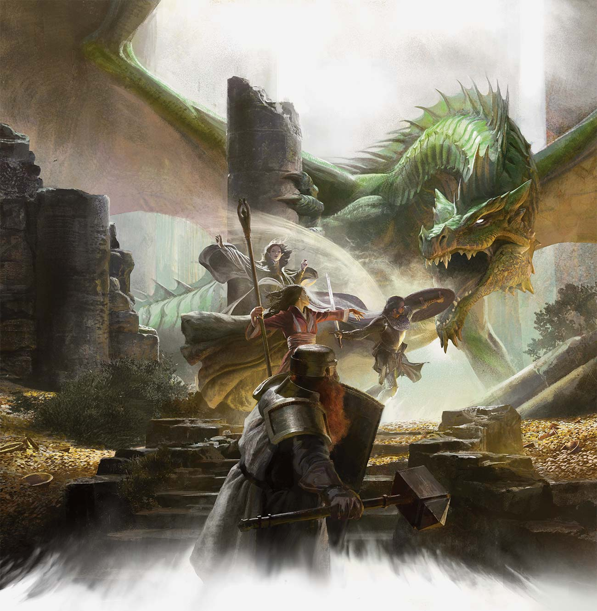
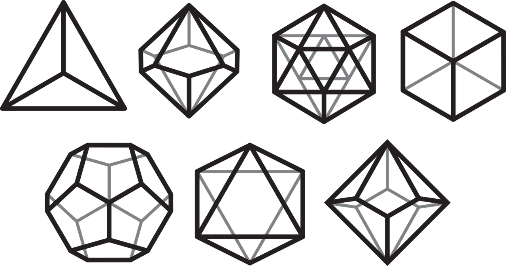

The many worlds of the Dungeons & Dragons game are places of magic and monsters, of brave warriors and spectacular adventures. They begin with a foundation of medieval fantasy and then add the creatures, places, and magic that make these worlds unique.
All these worlds share characteristics, but each world is set apart by its own history and cultures, distinctive monsters and races, fantastic geography, ancient dungeons, and scheming villains. Some races have unusual traits in different worlds. The halflings of the Dark Sun setting, for example, are jungle-dwelling cannibals, and the elves are desert nomads. Some worlds feature races unknown in other settings, such as Eberron’s warforged, soldiers created and imbued with life to fight in the Last War. Some worlds are dominated by one great story, like the War of the Lance that plays a central role in the Dragonlance setting. But they’re all D&D worlds, and you can use the rules here to create a character and play in any one of them.
Your DM might set the campaign on one of these worlds or on one that he or she created. Because there is so much diversity among the worlds of D&D, you should check with your DM about any house rules that will affect your play of the game. Ultimately, the Dungeon Master is the authority on the campaign and its setting, even if the setting is a published world.
How to Play
The play of the Dungeons & Dragons game unfolds according to this basic pattern.
- The DM describes the environment. The DM tells the players where their adventurers are and what’s around them, presenting the basic scope of options that present themselves (how many doors lead out of a room, what’s on a table, who’s in the tavern, and so on).
- The players describe what they want to do. Sometimes one player speaks for the whole party, saying, “We’ll take the east door,” for example. Other times, different adventurers do different things: one adventurer might search a treasure chest while a second examines an esoteric symbol engraved on a wall and a third keeps watch for monsters. The players don’t need to take turns, but the DM listens to every player and decides how to resolve those actions. Sometimes, resolving a task is easy. If an adventurer wants to walk across a room and open a door, the DM might just say that the door opens and describe what lies beyond. But the door might be locked, the floor might hide a deadly trap, or some other circumstance might make it challenging for an adventurer to complete a task. In those cases, the DM decides what happens, often relying on the roll of a die to determine the results of an action.
- The DM narrates the results of the adventurers’ actions. Describing the results often leads to another decision point, which brings the flow of the game right back to step 1.
Game Dice
The game uses polyhedral dice with different numbers of sides. You can find dice like these in game stores and in many bookstores.
In these rules, the different dice are referred to by the letter d followed by the number of sides: d4, d6, d8, d10, d12, and d20. For instance, a d6 is a six-sided die (the typical cube that many games use).
Percentile dice, or d100, work a little differently. You generate a number between 1 and 100 by rolling two different ten-sided dice numbered from 0 to 9. One die (designated before you roll) gives the tens digit, and the other gives the ones digit. If you roll a 7 and a 1, for example, the number rolled is 71. Two 0s represent 100. Some ten-sided dice are numbered in tens (00, 10, 20, and so on), making it easier to distinguish the tens digit from the ones digit. In this case, a roll of 70 and 1 is 71, and 00 and 0 is 100.
When you need to roll dice, the rules tell you how many dice to roll of a certain type, as well as what modifiers to add. For example, “3d8 + 5” means you roll three eight-sided dice, add them together, and add 5 to the total.
The same d notation appears in the expressions “1d3” and “1d2.” To simulate the roll of 1d3, roll a d6 and divide the number rolled by 2 (round up). To simulate the roll of 1d2, roll any die and assign a 1 or 2 to the roll depending on whether it was odd or even. (Alternatively, if the number rolled is more than half the number of sides on the die, it’s a 2.)